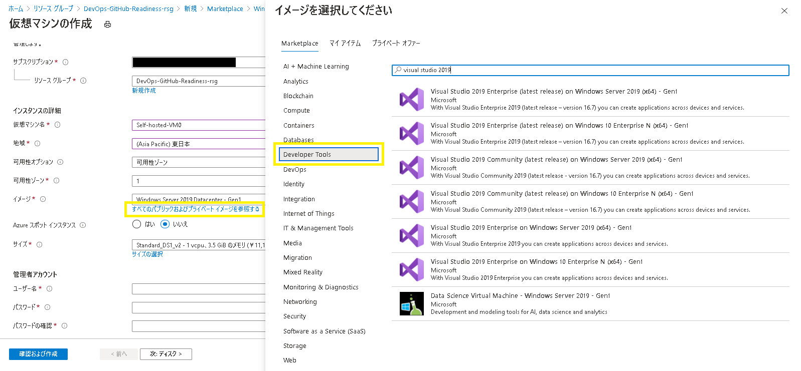
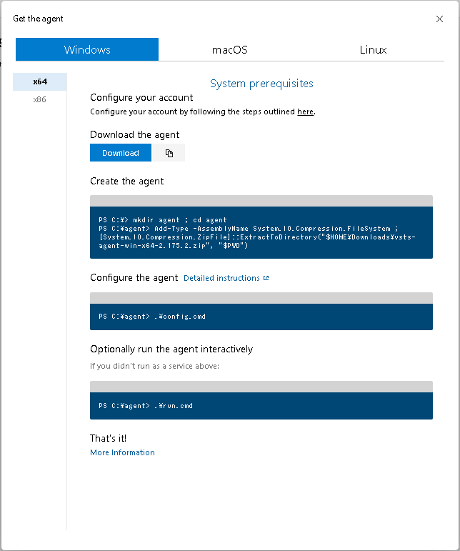

こんにちは、Japan Developer Support Core チームです。
Azure DevOps におけるサイレント ヒーロー、縁の下の力持ちである Azure Pipelines エージェントには、いくつか種類があるのをご存じですか？
- Microsoft-hosted エージェント
- Self-hosted エージェント
- Azure virtual machine scale set エージェント
日頃、皆さんが DevOps からコードをビルドしたり、Azure Pipelines を使ってソフトウェアをデプロイする時には、裏でこれらのエージェントが働いています。
今日は、これら働き者のエージェントの中から Self-hosted エージェントを実際に構築して、Azure Pipelines から利用して楽しんでみましょう。
本日のメニューはこちらです。
- Self-hosted エージェントを構築するための仮想マシンを用意する
- 用意した仮想マシン上に、Self-hosted エージェントを構築する
- GitHub 上のソースコードをインポートし、Self-hosted エージェントを使って Azure Pipelines 経由でビルド・リリースして、Azure App Service を発行する
前提条件
- アクティブなサブスクリプションが含まれる Azure アカウントをご用意ください。無料でアカウントを作成できます。
- このブログ記事では、Windows 上の Azure App Service に ASP.NET Core Web アプリケーション(以降、WebApp)をデプロイします。
- 先に「DevOps から Repos を利用してみよう (Azure Repos/GitHub)！」の「3. GitHub上のソースコードを、Azure Pipelines 経由でビルド・リリースして、Azure App Serviceを発行する」までを完了しておくことをお勧めします。
- GitHub アカウントを取得しておいてください。
1. Self-hosted エージェントを構築するための仮想マシンを用意する
Azure Pipelines エージェントは、Azure Pipelines と連携してビルドやデプロイを行うプログラムです。
Microsoft-hosted エージェントを使う場合、パイプラインを実行する度に新しい仮想マシンが作成されて、その上でエージェント プログラムが動きます。
そして一回使用する毎に、なんとその仮想マシンはじゃんじゃん破棄されています。
仮想マシンの使い捨て・・・贅沢ですね！
これに対して、Self-hosted エージェントを使う場合、エージェント プログラムはユーザー自身で用意したマシンの上で動きます。
そして Self-hosted エージェントを動かすマシンは、Azure VM 等の仮想マシンでも、オンプレミスの物理マシンでも OK です。
最新の CPU に SSD、メモリも潤沢に搭載した爆速マシンを用意して、とっておきのSelf-hosted エージェント環境を構築することもできるのです。
例えば、ビルド環境をクラウド上ではなくローカル環境で確保したい場合には、Self-hosted エージェントをオンプレミスの物理マシンで動かすことで実現できます。
また、複数の開発環境を構築済みのビルド専用マシンが既にある場合は、これを Self-hosted エージェントを動かすマシンとして利用することもできますね。
さらに Self-hosted エージェントは Microsoft-hosted エージェントのように一回使用する毎に使い捨て、ではないので、クリーンビルドを実行しないパイプラインを定義すれば、インクリメンタル ビルドによってビルドの実行速度を上げることもできます。
開発環境・ビルド環境としてのメンテナンスは必要ですが、その分、自由に手をかけることができるということですね。
話は逸れましたが、早速その Self-hosted エージェントを動かすためのマシンを用意していきましょう。
今回は、Azure ポータルから Azure 仮想マシンを一台作成します。
前述したとおり、Azure Pipelines エージェントは、Azure Pipelines と連携してビルドやデプロイを行うプログラムです。
このため、エージェントが動くマシンには、ビルドやデプロイを行うための開発環境がインストールされている必要があります。
エージェントはあくまでも、Azure Pipelines と連携してビルドやデプロイをキック・実行するプログラムでしかなく、実際のビルドやデプロイはこうした開発環境が行うのですね。
（実は、Microsoft-hosted エージェントを使う場合に毎回使い捨てされる仮想マシン達には、あらかじめ主要な開発環境が全てインストールされているんですよ！）
そして、Self-hosted エージェントを構築できるマシンのオペレーティングシステムには、以下の三種類が用意されています。
なんと Docker コンテナーにも Self-hosted エージェントを構築することが可能ですよ。
今回は、あらかじめ Visual Studio 2019 が同梱された Windows 10 の仮想マシンを一台、Azure ポータルから作成することにしましょう。
なお、Azure VM のご利用においては課金が生じます。
以下のサイトで Virtual Machines の料金例をご紹介していますので、ご確認くださいね。
- Marketplace から「Windows Server」をキーワードに検索を行い、「仮想マシンの作成」では「すべてのパブリックおよびプライベート イメージを参照する」リンクをクリックします。

- 「イメージを選択してください」ウィンドウのブレードから「Developer Tools」を選択し、「Visual Studio 2019」をキーワードに検索を行い、「Visual Studio 2019 Enterprise (latest release) on Windows 10 Enterprise N (x64) - Gen1」を選択します。
- 続くウィザードでは、利用したいマシン性能に応じて選択をしていきましょう。「パブリック受信ポート」では「RDP」を選択するのを忘れずに。**「管理者アカウント」の「ユーザー名」と「パスワード」も控えておいてくださいね。**
ウィザード上での選択・入力を一通り終えたら、仮想マシンを「作成」しましょう。
久しぶりにコーヒーを一杯入れに行っている間に、きっと仮想マシンが出来上がっています。
出来上がりを確かめるために、先ほど「パブリック受信ポート」で選択した「RDP」を利用して、実際に仮想マシンの状態をのぞいてみましょう。
- Azureポータルから、作成した仮想マシン（例：Self-hosted-VM0）を開いて「接続」アイコンをクリックし、「RDP」を選択します。
- 「RDPで接続する」画面で「RDPファイルのダウンロード」ボタンをクリックすると、拡張子.RDPのファイルがダウンロードされます。
- ダウンロードした.RDPファイルを開いて、仮想マシンにリモートデスクトップ接続しましょう。**手順3.の「管理者アカウント」で控えておいた「ユーザー名」と「パスワード」を使って接続してくださいね。**
これからこの仮想マシン上に、Self-hosted エージェントを構築していくのかと思うと、なかなかにワクワクしますね！
なお、接続した仮想マシンにインストールされている Visual Studio 2019 は、そのままではまだライセンスされていません。
ご利用にあたり、適切なユーザーライセンスを使用してVisual Studio 2019 のライセンス認証をお願いいたします。
2. 用意した仮想マシン上に、Self-hosted エージェントを構築する
仮想マシンの準備ができたら、早速 Self-hosted エージェントを構築していきましょう。
Self-hosted エージェントの構築、というと仰々しいですが、実際にやることは、準備しておいた仮想マシン上にエージェント プログラムをインストールするだけです。
インストール用のスクリプトも Azure DevOps から入手できますので、気負わずやっつけてしまいましょう。
詳しい手順は、Docs サイトでもご紹介していますので、ご覧になってくださいね。
- 組織の所有者 (Owner) 権限を持つアカウントで、DevOps にサインインします。テスト用に、あなたのアカウントで新しい組織を作成してしまうのも良いかもしれませんね。
- 小さな「User settings」ボタンをクリックして「Profile」を選択し、ブレードから Security\Personal access tokensを選択します。「Personal Access Tokens」画面で「+New Token」をクリックすると「Create a new personal access token」ウィンドウが開きますので、お好きな PAT 名 (例：pat-DevOps-GitHub-Readiness-org) を入力し、以下の Docs サイトにあるように「Scope」には「read」「manage」のみを選んで「Create」ボタンをクリックしましょう。ここで作成した PAT は、エージェントの登録を完了するためだけに使用しますので、有効期限は短くてもオッケーですよ。PAT の作成に成功すると、PATのトークンが表示されます。**このトークンはこの画面で一度しか表示されませんので、必ず控えておいてくださいね。**

- DevOps ポータルのブレードから「Organization settings」を選択し、Pipelines\Agent pools を開きます。「Add pool」ボタンをクリックして、あなたのための Agent プールを一つ作成しましょう。「Pool type:」には「Self-hosted」を選んでくださいね。**Agentプールの名前（例：DevOps-GitHub-Readiness-org-pool）も控えておきましょう。**
- 作成した Agent プールを開いて「New agent」ボタンをクリックします。おお・・・核心に迫る感じのウィンドウが開きますね！ 今回、準備したのは Windows 10 の仮想マシンなので、「Windows」タブが選択されていることを確認しておいてくださいね。

- 「Download the agent」の「Copy URL to Clipboard」ボタンをクリックして、**エージェント プログラムのインストール パッケージ（.ZIP ファイル）のダウンロード リンクを控えておきましょう。** 続く「Create the agent」「Configure the agent」「Optionally run the agent interactively」のコマンドラインも、控えておくと後々便利です。
Create the agent
1 | PS C:\> mkdir agent ; cd agent |
Configure the agent
1 | PS C:\agent> .\config.cmd |
Optionally run the agent interactively
1 | PS C:\agent> .\run.cmd |
- ここからは、先ほどリモートデスクトップ接続で接続しておいた仮想マシンに戻っての作業になります。仮想マシンのスタートメニューから「ファイル名を指定して実行」を開いて、手順5.で控えておいたエージェント プログラムのインストール パッケージのダウンロード リンクを入力して実行し、ユーザープロファイルの Downloads フォルダに .ZIP ファイルを保存してください。
- Windows PowerShell を管理者として実行し、手順 5. で控えておいたコマンドラインを順番に実行していきます。「Configure the agent」のコマンドラインだけ、以下のように対話的に入力を求められますので、注意してくださいね。
1 | Enter server URL > https://dev.azure.com/DevOps-GitHub-Readiness-org // ここでは「https://dev.azure.com/{your-organization}」を入力します。 |
カッコいいので、PowerShell の画面もご紹介しちゃいます。
レガシーな感じのアスキーアートが痺れますね・・・！ 好き・・・！
さて、手順 7. まで無事終了したところで、仮想マシン上での Self-hosted エージェントの構築は完了です。
お疲れさまでした！
・・・と言いたいところですが、ここで息切れしてしまわない内に DevOps ポータルに戻って、構築した Self-hosted エージェントがキッチリ働く準備ができているかどうかチェックしましょう。
手順 3. で作成した Agent プールを開いて、「Agents」タブを開きます。
Self-hosted エージェントの構築が適切に完了できていれば、下図のようにあなたの Self-hosted エージェントが表示されます！
表示されている Self-hosted エージェントをクリックすると、さらにこのエージェントの詳細情報を確認できますよ。
「Jobs」タブには現在実行 (Run) 中のジョブが表示されます。
今はまだ、何もパイプラインのジョブが実行されていないので空のリストが見えるだけですね。
「Capabilities」タブには、このエージェントが実行されているマシンのシステム性能や環境変数などがリストアップされています。
今回は、あらかじめ Visual Studio 2019 が同梱された Windows 10 の仮想マシンを準備しましたので、Visual Studio 関連の変数もリスト内で見つけることができます。
3. GitHub 上のソースコードを、Self-hosted エージェントを使って Azure Pipelines 経由でビルド・リリースして、Azure App Service を発行する
下拵えの完了した Self-hosted エージェントを使って、早速お料理していきましょう！
GitHub アカウントを取得しておいてくださいね。
- GitHub にサインインして、以下のサンプルを自分の GitHub リポジトリに fork しておきます。このリポジトリを使いましょう。
https://github.com/jpdscore/AspNetCoreWebApplicationCSharp - Azure ポータルから、新しい Azure App Service を一つ (GitHubSelf-hostedProject-WebApp9) 作ります。
- DevOps ポータルから、Self-hosted エージェントを登録した DevOps の組織 (例：https://dev.azure.com/DevOps-GitHub-Readiness-org ) に、新しいプロジェクト (GitHubSelf-hostedProject-WebApp9-prj) を作成します。
- プロジェクトのブレードから Repos\Files を開いて、「Import a repository」の「Import」ボタンをクリックします。手順 1. で fork しておいた GitHub のリポジトリ URL を指定してインポートします。
- プロジェクトのブレードから Pipelines を開いて、「Create Pipeline」ボタンをクリックします。「Where is your code?」画面では「Azure Repos Git (YAML)」を選択します。「Select a repository」画面では手順 4. でインポートしておいたリポジトリを選択します。「Configure your pipeline」画面では「ASP.NET Core (.NET Framework)」を選択します。
- 「Review your pipeline YAML」画面で、表示された YAML を以下のように修正します。このパイプラインで使用するエージェントプールとして、Self-hosted エージェントのプールを指定していることにになりますね。編集が終わったら「Save & Run」ボタンをクリックしましょう。
修正前
1 | pool: |
修正後
1 | pool: DevOps-GitHub-Readiness-org-pool |
- パイプラインの実行 (Run) が始まったら、急いで Agent プールを開いてみましょう！ 手順 6. で指定した Self-hosted エージェントをクリックすると、先ほどは空だった「Jobs」タブ内でジョブが動いているのを確認できますよ。
- Self-hosted エージェント上でのビルドは成功したので、次はデプロイ (リリース) にもチャレンジしましょう。プロジェクトのブレードから Pipelines を開いて、先ほど作成したパイプラインを「Edit」で開きます。
- Yaml の末尾にマウスカーソルを置いた状態で、「Show assistant」ボタンをクリックし、「Azure App Service deploy」タスクを探します。デプロイ先として、手順 2. で作っておいた Azure App Service を指定していきますが、*ここで注意！ 「Package or folder」のパスをよく確認してください。** 2020 年 11 月現在、既定で「$(System.DefaultWorkingDirectory)/**/.zip」が入力されていますが、これを「$(build.artifactStagingDirectory)\WebApp.zip」に変更しておきましょう。この Yaml ファイルでは、下記 VSBuild タスク内でビルド成果物 (Artifacts) を「$(build.artifactStagingDirectory)\WebApp.zip」に生成しますので、「Package or folder」のパスもこの Artifacts のパス「$(build.artifactStagingDirectory)\WebApp.zip」に合致させる必要があるんですね。
1 | - task: VSBuild@1 |
追加の終わった AzureRmWebAppDeployment タスクは以下のようになります。
それでは Yaml を「Save」してみましょう。
1 | - task: AzureRmWebAppDeployment@4 |
- パイプラインの実行 (Run) が始まったら、またまた急いで Agent プールを開いてみましょう！ 手順 6. で指定した Self-hosted エージェントをクリックすると、先ほどの「Jobs」タブ内でジョブが動いているのを確認できますよ。しばらくすると、無事全てタスクが終了して、Self-hosted エージェント上でのビルドとリリース (デプロイ) が完了します。
今度こそ、お疲れさまでした！
今回は、Self-hosted エージェントを構築して、実際に Azure Pipelines から使ってみるところまでの手順を一通りご紹介しました。
次回は、Azure DevOps で行うコンテナーデプロイについてご紹介しようと思っています。
どうぞよろしくお願いします！
本ブログの内容は弊社の公式見解として保証されるものではなく、開発・運用時の参考情報としてご活用いただくことを目的としています。もし公式な見解が必要な場合は、弊社ドキュメント (https://docs.microsoft.com や https://support.microsoft.com) をご参照いただくか、もしくは私共サポートまでお問い合わせください。